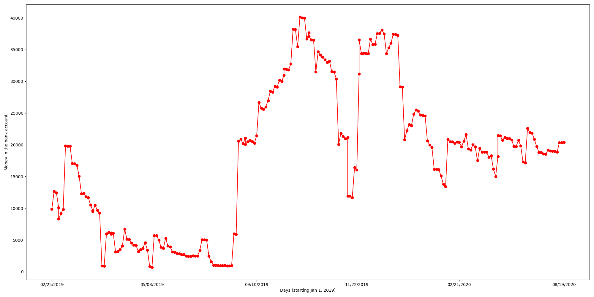

International Relations Organization at UVA's Data Webpage
IRO at UVA is not officially affiliated with the university
Last Updated 07-21-2020
The IRO bank account has $18992.51 as of now
Since Jan 22, 2019, the most money in the account was $40,138.35 on Oct 15, 2019, and the smallest amount was $718.66 on May 03, 2019

The Bank Account Over Time